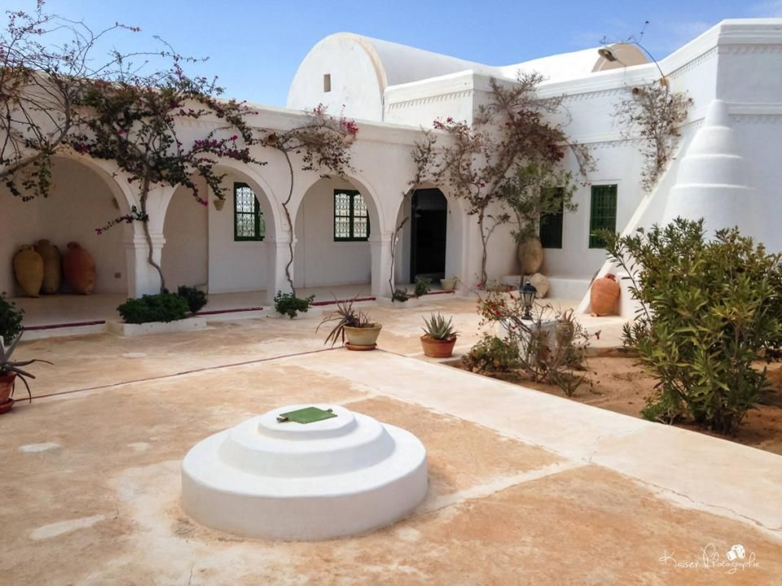

01
PATRIMOINE ARCHITECTURAL
Le Menzel et le Houch
Les menzels sont des habitations .traditionnelles typiques de Djerba Elles possèdent une architecture adaptée au climat Elles sont souvent entourées de jardins et de murs Elles comprennent une cour intérieure et des pièces traditionnelles Ces maisons montrent le mode de vie traditionnel des habitants de Djerba